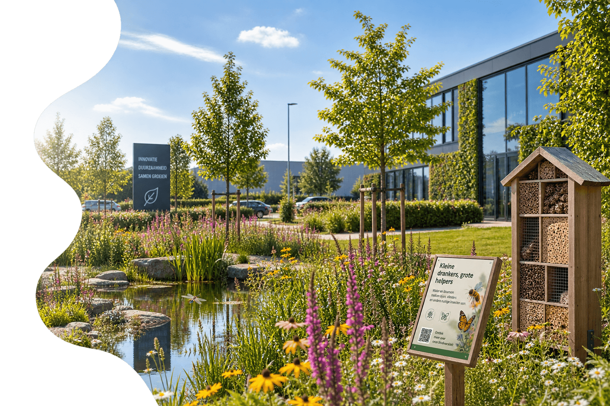
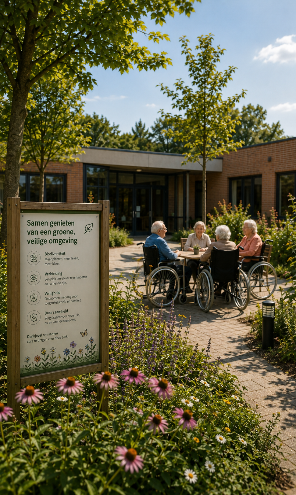
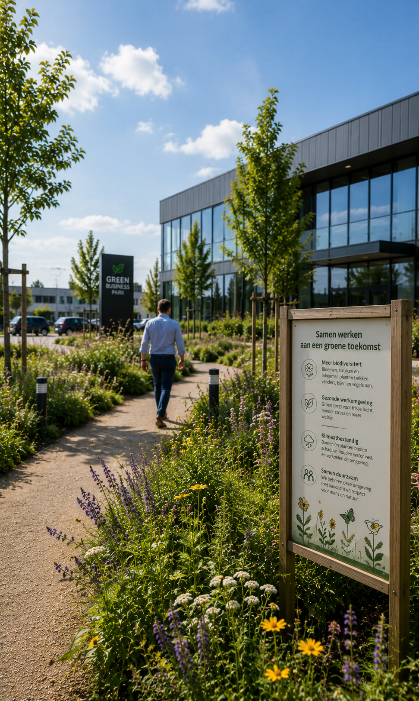
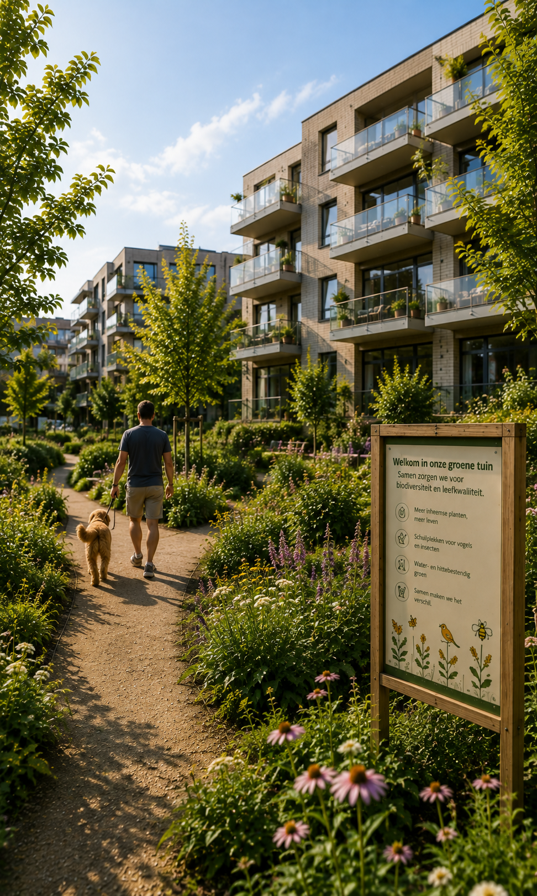
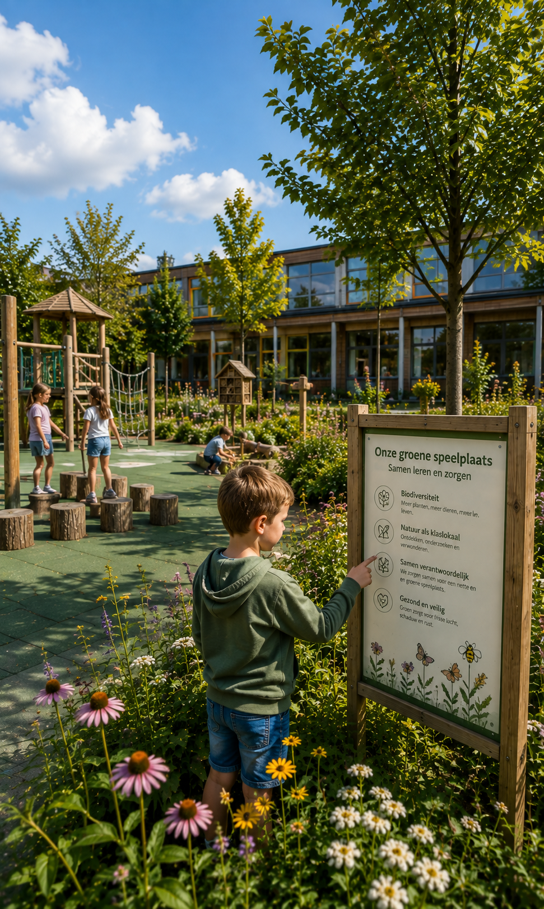
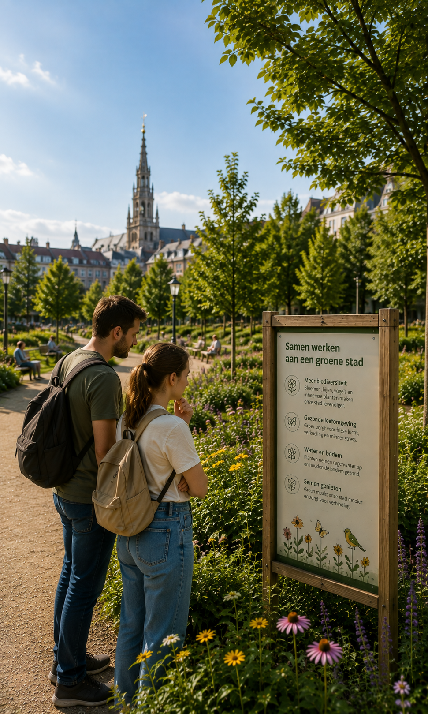
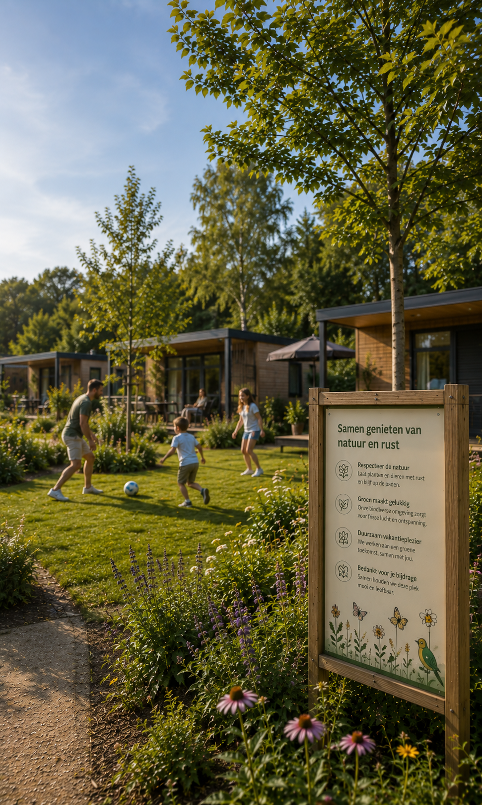

Uw buitenomgeving.
Integraal beheerd.
Groenbeheer, terreinonderhoud en snelle interventies voor bedrijven, zorginstellingen, residenties, syndici, scholen en openbare besturen.

Zes disciplines, één aanspreekpunt
Geen losse aannemers voor groen, verharding en netheid apart. Eén planning, één verantwoordelijke, voor alles wat buiten gebeurt.
Groenbeheer
Gazons, hagen, borders, bomen en beplanting.
Terreinbeheer
Parkings, paden, verhardingen, onkruid en buitenzones.
Netheid
Bladeren, groenafval, zwerfvuil en periodieke opruiming.
Interventies
Snelle oplossing voor onverwachte buitenproblemen.
Seizoensbeheer
Voorjaar, bladval, droogte, storm en winter.
Minder onderhoud. Niet minder resultaat.
Wij richten groenzones in volgens hoe de natuur zelf werkt. Inheemse beplanting en zelfregulerende ecosystemen vragen na verloop van tijd minder ingrepen dan een klassiek gazon. Het gevolg: een onderhoudskost die daalt naarmate uw contract vordert, in plaats van gelijk blijft of stijgt.
Waar een minder intensief gemaaide zone al snel voor verwaarlozing wordt aangezien, plaatsen wij een infobord dat in één oogopslag uitlegt wat er gebeurt — bijvoorbeeld: "Dit is geen wildgroei. Dit is een vlinder- en vogelbiotoop." Zo blijft de site verzorgd ogen, ook waar wij bewust minder ingrijpen.
Zes omgevingen, elk met eigen eisen

Zorg
Veilig en verzorgd voor bewoners, bezoekers en medewerkers.
Ontdek meer →
Bedrijven & sites
Representatief, zonder operationele zorgen.
Ontdek meer →
Vastgoed & syndici
Professioneel beheer van gemeenschappelijk groen.
Ontdek meer →
Scholen
Veilig en functioneel, afgestemd op het schoolritme.
Ontdek meer →
Publieke sector
Flexibele beheercapaciteit voor steden en gemeenten.
Ontdek meer →
Vakantieparken & campings
Groen dat het vakantiegevoel versterkt, het hele seizoen door.
Ontdek meer →Iets buiten dat nú opgelost moet worden?
Omgevallen tak. Wildgroei. Groenafval. Vuile parking. Verstopte afvoer. Stormschade.
Vaste prijs. Snelle planning. Geen offertetraject.
Elke site digitaal opvolgbaar
Integraal Groen werkt niet op goed geheugen. Elke zone en elke taak is geregistreerd en herleidbaar.
Digitale terreinfiche
Alle zones en onderhoudstaken overzichtelijk geregistreerd.
Foto-rapportage
Uitgevoerde interventies digitaal gedocumenteerd.
Slimme planning
Werkzaamheden gepland volgens seizoen, locatie en noodzaak.
Datagedreven beheer
Van reactief onderhoud naar voorspelbaar terreinbeheer.
Laat ons uw buitenomgeving bekijken
Een terreinbezoek is vrijblijvend en geeft u een concreet beeld van wat mogelijk is — qua beheer, kostenefficiëntie en uitstraling.
Vraag een terreinbezoek aan